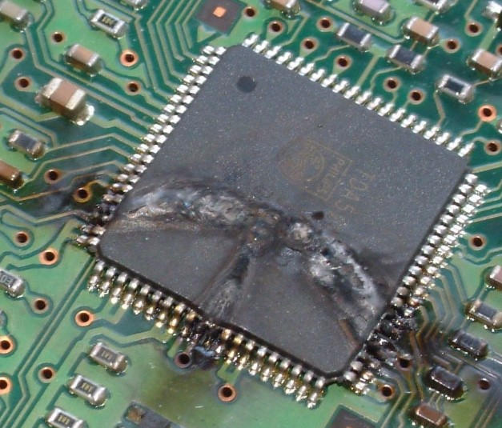

Engineering Case Studies
Twelve real-world-style ESD failures spanning every product category from Module 06 -- each with the reported symptom, the investigation path, the root cause, and the fix that resolved it.

Three fully worked failures. For each one, read the debugging trail, then study the circuit diagram and the top view of the actual PCB. Use the Failing design / Fixed design toggle to compare the layout that failed with the layout that passed — the schematic barely changes, the placement is what makes or breaks it.
Across compliance-lab reports and field-return analyses, the same handful of root causes account for the overwhelming majority of ESD failures. The shares below are illustrative of commonly reported industry experience — the ranking is what matters. Note that the single most common cause is not a missing part: it is a protection part that exists but cannot do its job because of where it sits on the board.
Module 9 Quiz
Select the best answer for each question. Instant feedback is provided after each response.